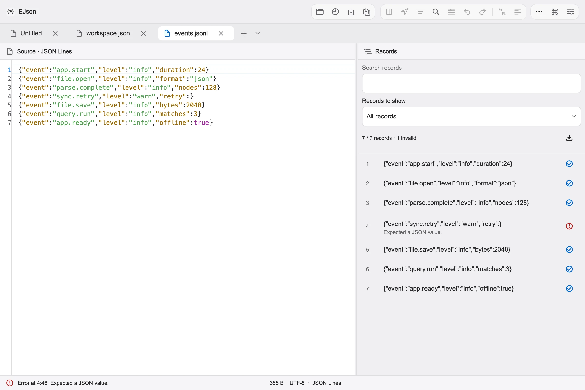
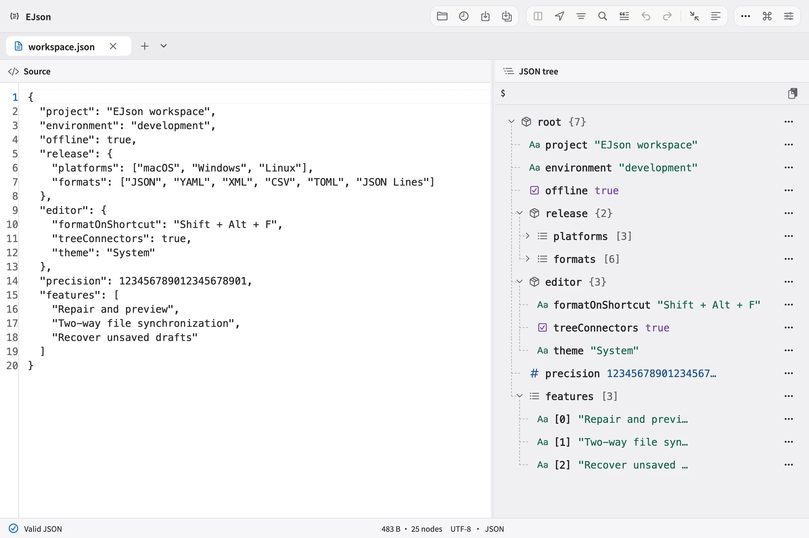
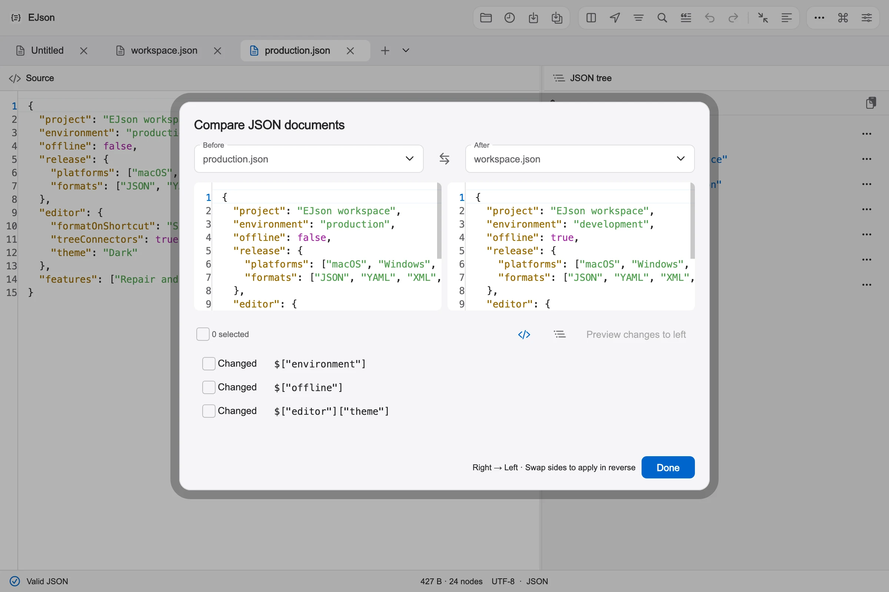
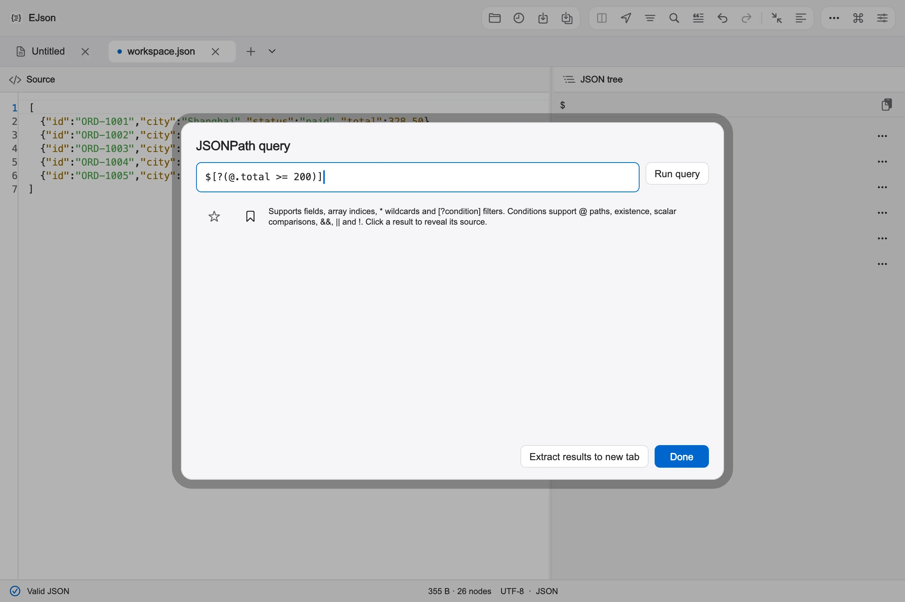

逐行检查 JSON Lines
打开 .jsonl 和 .ndjson，逐行校验、搜索记录，筛选有效或无效行。点击记录定位源码，筛选结果可导出为 JSON Lines 或 JSON 数组。
- 保留原始行号
- 无效行定位
- 筛选结果导出

macOS / Windows / Linux

支持的文件格式
Music “Cipher” · Kevin MacLeod · CC BY 4.0 · 选段、均衡与淡入淡出
截图使用示例数据，展示当前 App 的实际 Flutter 界面。点击任意截图可放大查看。
打开 .jsonl 和 .ndjson，逐行校验、搜索记录，筛选有效或无效行。点击记录定位源码，筛选结果可导出为 JSON Lines 或 JSON 数组。

修复尾逗号、单引号、未加引号的键、注释和缺少的分隔符。预览中列出修复类型与次数，应用后支持一步撤销。

支持 JSON 与 YAML、XML、CSV、TOML、JSON Lines 互相转换。查看结果，按需要调整 CSV 列、XML 映射或 YAML 文档，再打开为新标签或导出文件。


筛选和排序记录，复制单元格，导出 CSV。数组项支持移动、复制和按字段排序。

检查新增、移除与修改的字段，预览并应用选中的差异。

支持通配符、标量条件筛选和收藏查询，结果可定位源码或提取到新标签。

配置磁盘双向同步、恢复草稿、启动恢复和界面语言，外观与阅读设置也可独立调整。
语法高亮、错误定位、撤销重做、正则查找与捕获组替换。格式化保留重复键、数字原文和字符串转义。
已命名文件在停止输入约 500 毫秒后写入。检测外部修改并同步加载，双方有修改时暂停同步并提供处理入口。
停止编辑 2 秒后保存恢复草稿，持续编辑时最多间隔 10 秒。异常退出后恢复内容、标签顺序和选中标签。
使用 JSON Schema 校验内容并定位问题，按字段名或路径预览脱敏结果，再打开或导出。
浅色与深色、中英文、本机字体、字号、行距和独立树样式。层级虚线可在外观设置中开启或关闭。
多文件拖入、最近文件搜索、命令面板和工作区恢复。格式化快捷键为 Shift+Alt+F，macOS 使用 Shift+Option+F。
各平台的安装包和版本说明都在 GitHub Releases。
Apple Silicon / Intel DMG
M 系列选 arm64，Intel 选 x86_64。打开 DMG，将 EJson 拖入「应用程序」。也可下载通用 ZIP。
brew tap echo-braveshine/ejson https://github.com/Echo-BraveShine/EJson.git
brew install --cask echo-braveshine/ejson/ejsonx64 Setup.exe / MSI
Setup.exe 为当前用户安装，MSI 为整台电脑安装。也可下载便携 ZIP。
支持通过发布页的本地 WinGet 清单安装。
x86_64 / ARM64 AppImage
赋予执行权限后打开，无需管理员权限。需要 glibc 2.39+、GTK 3 和 OpenGL。
Ubuntu 24.04+ 和 Debian 13+ 也可安装 DEB，Fedora 和兼容系统可安装 RPM。